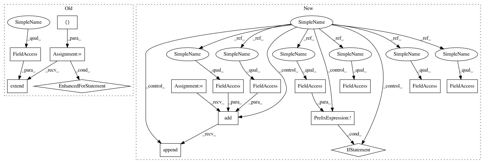

b2202480258b6f2f5f4e020e86cde975088c7792,contrib/cpp/src/python/pants/contrib/cpp/tasks/cpp_compile.py,CppCompile,execute,#CppCompile#,34
Before Change
// Compile source files to objects.
with self.invalidated(targets, invalidate_dependents=True) as invalidation_check:
invalid_targets = []
for vt in invalidation_check.invalid_vts:
invalid_targets.extend(vt.targets)
for target in invalid_targets:
with self.context.new_workunit(name="cpp-compile", labels=[WorkUnit.MULTITOOL]):
for source in target.sources_relative_to_buildroot():
if is_cc(source):
// TODO: Parallelise the compilation.
// TODO: Only recompile source files that have changed since the
// object file was last written. Also use the output from
// gcc -M to track dependencies on headers.
self._compile(target, source)
def _objpath(self, target, source):
abs_source_root = os.path.join(get_buildroot(), target.target_base)
abs_source = os.path.join(get_buildroot(), source)
rel_source = os.path.relpath(abs_source, abs_source_root)
After Change
// Compile source files to objects.
with self.invalidated(targets, invalidate_dependents=True) as invalidation_check:
obj_mapping = self.context.products.get("objs")
for vt in invalidation_check.all_vts:
for source in vt.target.sources_relative_to_buildroot():
if is_cc(source):
if not vt.valid:
with self.context.new_workunit(name="cpp-compile", labels=[WorkUnit.MULTITOOL]):
// TODO: Parallelise the compilation.
// TODO: Only recompile source files that have changed since the
// object file was last written. Also use the output from
// gcc -M to track dependencies on headers.
self._compile(vt.target, vt.results_dir, source)
objpath = self._objpath(vt.target, vt.results_dir, source)
obj_mapping.add(vt.target, vt.results_dir).append(objpath)
def _objpath(self, target, results_dir, source):
abs_source_root = os.path.join(get_buildroot(), target.target_base)
abs_source = os.path.join(get_buildroot(), source)
In pattern: SUPERPATTERN
Frequency: 3
Non-data size: 16
Instances
Project Name: pantsbuild/pants
Commit Name: b2202480258b6f2f5f4e020e86cde975088c7792
Time: 2015-07-11
Author: codyhgibb@gmail.com
File Name: contrib/cpp/src/python/pants/contrib/cpp/tasks/cpp_compile.py
Class Name: CppCompile
Method Name: execute
Project Name: pantsbuild/pants
Commit Name: b2202480258b6f2f5f4e020e86cde975088c7792
Time: 2015-07-11
Author: codyhgibb@gmail.com
File Name: contrib/cpp/src/python/pants/contrib/cpp/tasks/cpp_compile.py
Class Name: CppCompile
Method Name: execute
Project Name: pantsbuild/pants
Commit Name: b2202480258b6f2f5f4e020e86cde975088c7792
Time: 2015-07-11
Author: codyhgibb@gmail.com
File Name: contrib/cpp/src/python/pants/contrib/cpp/tasks/cpp_library_create.py
Class Name: CppLibraryCreate
Method Name: execute
Project Name: pantsbuild/pants
Commit Name: b2202480258b6f2f5f4e020e86cde975088c7792
Time: 2015-07-11
Author: codyhgibb@gmail.com
File Name: contrib/cpp/src/python/pants/contrib/cpp/tasks/cpp_binary_create.py
Class Name: CppBinaryCreate
Method Name: execute